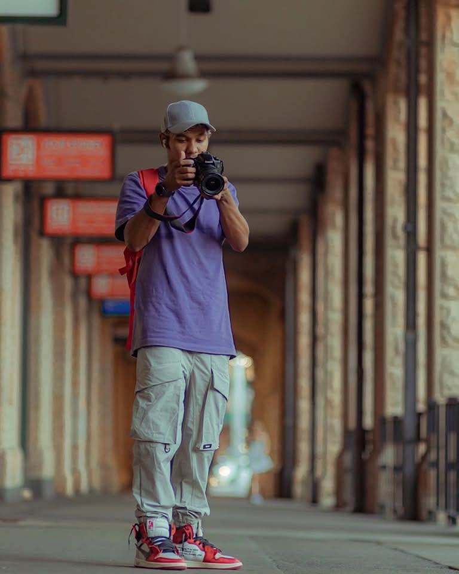

Still Morning
Wedding editorial
Editorial wedding and portrait studio
Cinematic photography for people, celebrations, and places with atmosphere. Made with restraint, feeling, and a sharp sense of timing.
A quieter kind of luxury: tactile images, confident negative space, and frames that know when to hold back.
Recent frames chosen for mood, rhythm, and the emotional charge between subject and setting.
Wedding editorial

Fashion story

Travel diary

Destination wedding

Portrait study

Behind the lens
We direct gently, notice patiently, and edit with the discipline of a film sequence. The result is elegant, emotionally specific photography without the noise.
Client notes
“The photographs feel honest, cinematic, and somehow exactly like the day sounded.”
Riya and Aman“Our campaign suddenly had restraint, atmosphere, and a very expensive kind of silence.”
Mira Studio“Nothing felt staged, yet every frame looked composed with impossible care.”
ElenaBegin the frame
Tell us what you are planning, where it happens, and what you want to remember.